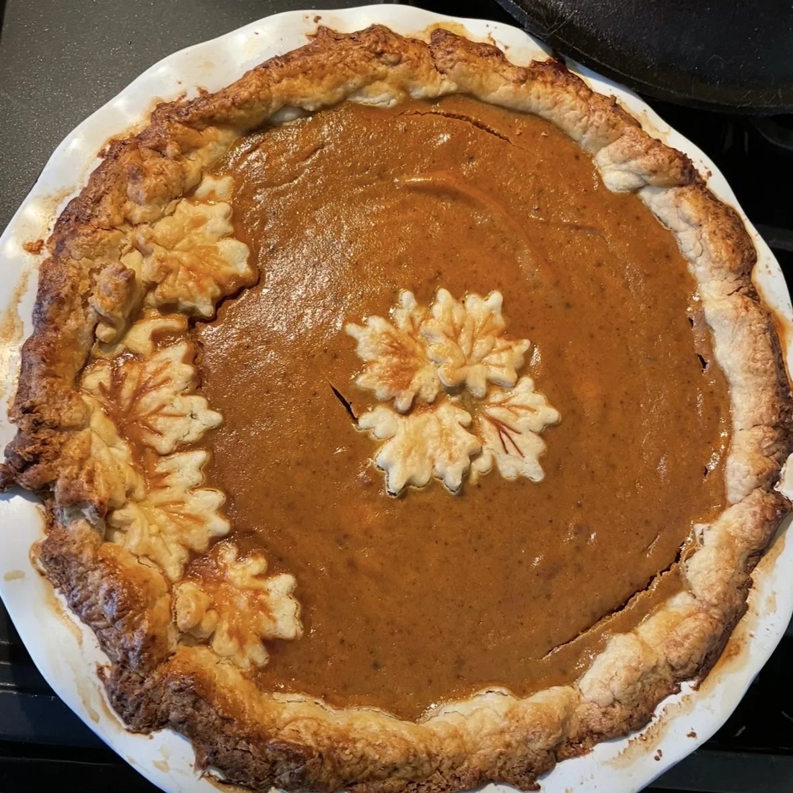
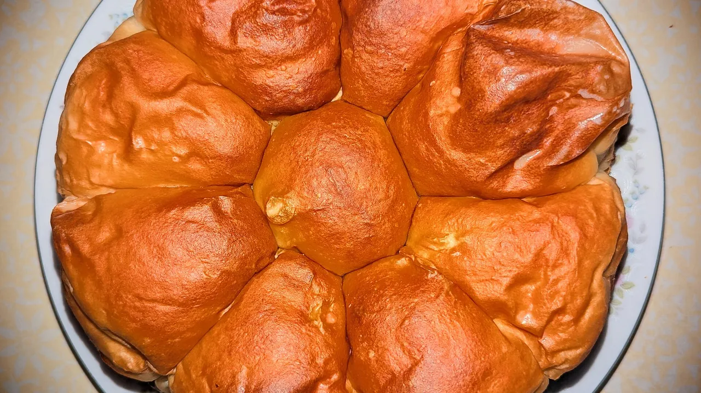
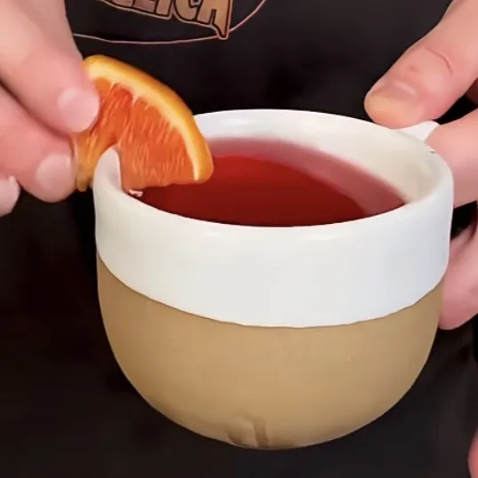

Blog ·
Thanksgiving 2026 Recipes

Uncle Cole is smoking the turkey this year, so we're bringing the sides and pies to go with it. Here they are, all in one place: soft Japanese milk buns, an apple pie, a pumpkin pie, one batch of homemade crust that covers both pies, a hot cranberry cider, and a Brussels sprouts slaw with pecan brittle.
- Pie crust
- Apple pie
- Pumpkin pie
- Japanese milk buns
- Cranberry cider
- Brussels sprouts slaw
- Grocery list
- Timeline
Homemade pie crust, for both pies


Ingredients
- 3¾ cups (470 g) all-purpose flour
- 1 tablespoon sugar
- 1½ teaspoons fine salt
- 1½ cups (3 sticks, 340 g) cold unsalted butter, cut into ½-inch cubes
- 9 to 12 tablespoons ice water
Method
- Whisk 3¾ cups (470 g) flour, 1 tablespoon sugar and 1½ teaspoons salt in a large bowl.
- Add 1½ cups (3 sticks, 340 g) cold cubed butter and work it in with a pastry cutter or your fingertips until the largest pieces are the size of peas. Some bigger flat pieces are good; they make the flakes.
- Drizzle in 9 tablespoons ice water and toss with a fork. Squeeze a handful: if it holds together, it's ready. If it crumbles, add more water 1 tablespoon at a time, up to 12 tablespoons total.
- Divide the dough into 3 equal pieces (about 330 g each), press each into a 1-inch-thick disc, wrap, and chill at least 1 hour (or up to 3 days; it also freezes for a month).
- Roll each disc on a floured surface into a 12-inch circle about ⅛ inch thick.
Keep everything cold. If the butter gets soft while you work, put the bowl or the rolled crust in the fridge for 10 minutes.
Apple pie

Ingredients
- 2 discs pie crust (above)
- 3 pounds apples (6 to 7 large), a mix of tart and sweet, such as Granny Smith and Honeycrisp
- ½ cup granulated sugar
- ¼ cup packed brown sugar
- 3 tablespoons all-purpose flour (or 2 tablespoons cornstarch)
- 1 tablespoon lemon juice
- 1½ teaspoons cinnamon
- ¼ teaspoon nutmeg
- ¼ teaspoon salt
- 2 tablespoons butter, cut into small pieces
- 1 egg beaten with 1 tablespoon milk, and coarse sugar for the top
Method
- Heat the oven to 425°F with a rack in the lower third. Put a baking sheet on the rack below to catch drips.
- Peel, core and slice 3 pounds apples about ¼ inch thick. Toss with ½ cup granulated sugar, ¼ cup brown sugar, 3 tablespoons flour, 1 tablespoon lemon juice, 1½ teaspoons cinnamon, ¼ teaspoon nutmeg and ¼ teaspoon salt.
- Fit 1 rolled crust into a 9-inch pie plate. Pile in the apples, mounding them in the middle, and dot with 2 tablespoons butter.
- Lay the second crust on top (whole with a few vents cut in, or cut into strips for a lattice). Trim to a 1-inch overhang, fold under and crimp.
- Brush with the egg wash (1 egg beaten with 1 tablespoon milk) and sprinkle with about 1 tablespoon coarse sugar. Chill 15 minutes while the oven finishes heating.
- Bake 20 minutes at 425°F, then lower to 375°F and bake 40 to 50 minutes more, until the crust is deep golden and the juices bubble thickly through the vents. Tent the edges with foil if they brown too fast.
- Cool at least 3 hours so the filling sets before slicing.
Pumpkin pie
Ingredients
- 1 disc pie crust (above)
- 1 can (15 oz) pumpkin purée, not pumpkin pie filling
- ¾ cup packed brown sugar
- 2 large eggs plus 1 yolk
- 1 cup heavy cream (or one 12-oz can evaporated milk)
- 1½ teaspoons cinnamon
- 1 teaspoon ground ginger
- ¼ teaspoon nutmeg
- ⅛ teaspoon ground cloves
- ½ teaspoon salt
- 1 teaspoon vanilla extract
Method
- Fit 1 rolled crust into a 9-inch pie plate, crimp the edge, and chill 30 minutes.
- Blind bake: heat the oven to 400°F. Line the crust with parchment, fill with pie weights or dried beans, and bake 15 minutes. Lift out the weights and bake 5 to 8 minutes more, until the bottom looks dry. Lower the oven to 350°F.
- Whisk the 15-oz can of pumpkin, ¾ cup brown sugar, 2 eggs plus 1 yolk, 1 cup heavy cream, 1½ teaspoons cinnamon, 1 teaspoon ginger, ¼ teaspoon nutmeg, ⅛ teaspoon cloves, ½ teaspoon salt and 1 teaspoon vanilla until smooth.
- Pour into the warm crust. Bake 45 to 55 minutes, until the edges are set and the center still jiggles slightly, like gelatin, when you nudge the pan.
- Cool completely, about 2 hours, then refrigerate. Serve with whipped cream.
Japanese milk buns

From @kwokspots on TikTok, with the amounts from the full recipe on the kwokspots blog. The tangzhong, a flour-and-milk paste cooked first, is what keeps them so soft and bouncy.
Tangzhong
- 2 tablespoons (20 g) flour
- 2 tablespoons (27 g) water
- 4½ tablespoons (60 g) milk
Yeast mixture
- 1 tablespoon (10 g) active dry or instant yeast
- 2 tablespoons (20 g) lukewarm water
Dough
- 2⅓ cups (380 g) all-purpose flour
- ¼ cup (60 g) sugar
- 1 teaspoon (3 g) salt
- ½ cup (130 g) milk
- 1 large egg
- 3 tablespoons unsalted butter, softened
- 1 beaten egg, for brushing
- Garlic butter, for the top (melted butter with minced garlic)
Method
- If using active dry yeast, stir 1 tablespoon (10 g) yeast into 2 tablespoons (20 g) lukewarm water and let it sit 10 minutes until foamy. With instant yeast, skip this and add the yeast and water with the dough ingredients.
- Make the tangzhong: cook 2 tablespoons (20 g) flour, 2 tablespoons (27 g) water and 4½ tablespoons (60 g) milk in a small saucepan over low heat, stirring, until it becomes a thick paste you can scoop up in one spoonful.
- In a stand mixer bowl, combine the yeast mixture, tangzhong, 2⅓ cups (380 g) flour, ¼ cup (60 g) sugar, 1 teaspoon (3 g) salt, ½ cup (130 g) milk and 1 egg. Mix on low for about 5 minutes, until a dough ball forms.
- On medium speed, add 3 tablespoons soft butter 1 tablespoon at a time, until it's fully mixed in and the dough is very smooth. If it's too sticky to handle, add flour a tablespoon at a time.
- Cover and let rise about 1½ hours, until doubled.
- Divide into 75 g pieces (about 10), roll each into a tight ball, and set them in a 9-inch cake pan with about 1 cm between them. Let rest 1 hour.
- Heat the oven to 350°F. Brush the rolls with 1 beaten egg and bake 20 minutes, until golden brown.
- Brush generously with garlic butter while warm (about 3 tablespoons melted butter with 2 cloves minced garlic).
Weighing the ingredients gives the most reliable dough. For a loaf instead, shape the dough into 3 rolled pieces of about 250 g in a 9-inch loaf pan and bake 25 to 30 minutes.
Cranberry cider

Inspired by @grubology on TikTok, made on the stove. It's like apple cider, but it tastes like cranberry sauce as a hot drink.
Ingredients
- 3 bags fresh cranberries
- Oranges, sliced
- 1½ cups sugar
- Cinnamon sticks
- Whole cloves
- Fresh ginger, sliced
- Any other warm spices you like
- Water, enough to cover
Method
- Soak 3 bags cranberries in cold water with about 1 tablespoon baking soda, then rinse and drain.
- Put the cranberries in a large pot with 2 to 3 sliced oranges, 1½ cups sugar, 2 cinnamon sticks, about 1 teaspoon whole cloves, a big piece of sliced ginger and any other spices.
- Add enough water to cover everything and bring to a boil. Turn the heat down and simmer for a few hours.
- Strain the cider, pressing on the fruit to squeeze out all the juice.
- Serve hot in mugs.
Brussels sprouts slaw with pecan brittle

Adapted from Crowded Kitchen's recipe, with a few swaps for our table: pecans instead of pistachios in the brittle, dried cranberries or pomegranate seeds instead of dates, and no bacon.
Pecan brittle
- 1½ cups pecans, roughly chopped
- ¼ cup maple syrup
- 2 teaspoons olive oil
- ½ teaspoon kosher salt
- ¼ teaspoon black pepper
Salad
- 1 lb Brussels sprouts
- 2 cups lacinato kale, finely chopped (about ½ a bunch)
- 1 cup celery, thinly sliced on a bias
- ⅔ cup dried cranberries or pomegranate seeds
- 1 large apple, diced
- ½ cup shaved parmesan
Lemon vinaigrette
- 6 tablespoons (3 oz) extra virgin olive oil
- 6 tablespoons freshly squeezed lemon juice
- 1 teaspoon lemon zest, optional
- 1 tablespoon apple cider vinegar
- 2½ tablespoons Dijon mustard
- 1 medium shallot, finely minced (about 2 tablespoons)
- ½ teaspoon dried thyme
- 1¼ teaspoons kosher salt
- ¾ teaspoon black pepper
Method
- Make the brittle: heat the oven to 275°F and line a small sheet pan with parchment. Toss 1½ cups chopped pecans with ¼ cup maple syrup, 2 teaspoons olive oil, ½ teaspoon kosher salt and ¼ teaspoon pepper, and spread in a single tight layer.
- Bake 40 to 45 minutes, until the syrup is bubbling and the nuts are deep golden. Let cool completely on the pan to harden, then break into small pieces.
- Make the vinaigrette: whisk or shake 6 tablespoons olive oil, 6 tablespoons lemon juice, 1 teaspoon lemon zest, 1 tablespoon apple cider vinegar, 2½ tablespoons Dijon, 1 minced shallot, ½ teaspoon thyme, 1¼ teaspoons kosher salt and ¾ teaspoon pepper in a jar until creamy.
- Trim 1 lb Brussels sprouts and shave them thin with a mandoline, a food processor's slicing blade, or a sharp knife.
- In a large bowl, combine the sprouts, 2 cups chopped kale, 1 cup sliced celery, ⅔ cup dried cranberries (or pomegranate seeds) and 1 diced apple. Toss with the vinaigrette.
- Top with ½ cup shaved parmesan and the pecan brittle just before serving so the brittle stays crunchy.
You can prep it a day ahead. Keep the dressed sprouts and kale in the fridge (they hold up well), store the brittle airtight at room temperature, and add the apple, parmesan and brittle right before serving.
Grocery list
Everything for all six recipes, combined. Tap to check things off; your phone remembers what you've ticked. Skip what's already in your pantry.
Produce
Dairy and eggs
Baking aisle
Spices
Pantry
Supplies
Timeline
Thanksgiving is Thursday, November 26. Times assume dinner at 4 PM; slide everything to match yours.
Monday or Tuesday
- AnytimeShop. Make the pie crust dough and chill the 3 discs.
- AnytimeMake the lemon vinaigrette and keep it in a jar in the fridge.
Wednesday · pie day
- 10:00 AMRoll out all 3 crusts. Assemble the apple pie; fit the third crust into a pie plate for the pumpkin pie and chill it.
- 10:30 AMApple pie goes in at 425°F, then 375°F. Out around 11:45.
- 12:00 PMOven to 400°F. Blind bake the pumpkin pie crust, about 20 minutes. Mix the filling meanwhile.
- 12:30 PMOven to 350°F. Fill and bake the pumpkin pie, 45 to 55 minutes.
- 1:30 PMOven to 275°F. Bake the pecan brittle, 40 to 45 minutes; cool and store airtight.
- EveningPumpkin pie into the fridge once cool. Apple pie stays covered on the counter.
Thursday · Thanksgiving
- 11:00 AMSoak the cranberries, then get the cranberry cider simmering. The house will smell like Thanksgiving all day.
- 12:30 PMStart the milk buns: tangzhong, mix, knead in the butter. First rise, about 1½ hours.
- 2:00 PMShape the buns into 75 g balls in the pan. Second rise, 1 hour.
- 2:30 PMShave the sprouts and chop the kale, celery and apple for the slaw.
- 3:00 PMOven to 350°F. Egg wash and bake the buns, 20 minutes. Make the garlic butter.
- 3:30 PMBrush the buns with garlic butter. Strain the cider and keep it warm. Toss the slaw with the vinaigrette.
- 4:00 PMDinner. Top the slaw with parmesan and pecan brittle at the table.
- DessertSlice both pies. Whipped cream on the pumpkin.